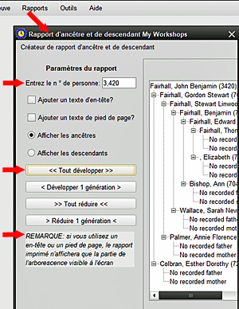

Cet écran permet à l'utilisateur de visualiser et d'imprimer un rapport restreint d'une ou plusieurs générations d'ancêtres ou de descendants d'une personne cible choisie. 1. À l aide du sélecteur de personne (à partir de PERSONNE >> Sélectionner une personne par), recherchez la personne cible pour le rapport et notez le numéro de personne. 2. Sélectionnez le rapport d'ancêtre / descendants dans l'écran RAPPORTS. 3. Entrez le numéro de personne dans cette case et appuyez sur [ENTRÉE]. La personne apparaîtra dans l'espace d'affichage avec ses ancêtres (par défault) affichés. 4. Vous pouvez maintenant afficher les détails des ancêtres manuellement (cliquez sur le signe '+') ou utiliser les boutons DÉVELOPPER TOUT ou DÉVELOPPER UNE GÉNÉRATION. Notez qu'en double-cliquant sur n'importe quelle génération, seule cette génération est développée, de sorte que vous pouvez être sélectif quant aux générations qui sont entièrement affichées. De même, en utilisant le signe moins '-' ou TOUT RÉDUIRE ou RÉDUIRE UNE GÉNÉRATION, l'affichage peut être modifié davantage. 5. Si vous choisissez d'afficher les descendants, les mêmes options de développement et de réduction s'appliquent. 6. Si une copie imprimée est requise, un en-tête et / ou un pied de page peuvent être ajoutés en utilisant leur cases de sélection. La sélection de IMPRIMER ouvrira les paramêtres par défault pour la configuration de la page, puis passera à l'impression avec votre imprimante par défault ou une autre imprimante choisie. REMARQUE IMPORTANTE : Si vous utilisez un en-tête ou un pied de page, le rapport imprimé n'affichera que la partie de l'aborescence visible à l'écran. La zone d'aborescence peut-être élargie ou allongée en agrandissant l'écran pour permettre à plus de noms et de détails d'être inclus dans la vue. 7. L'impression sans en-tête ou pied de page reproduira tout le texte, qu'il soit visible à l'écan ou non. 8. En entrant le numéro d'une autre personne et en appuyant sur [ENTRER] changera l'affichage pour se concentrer sur cette personne. 9. Sélectionnez FERMER pour revenir à l'écran principal HRE. |
|
Sujects Relatifs |